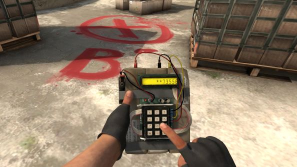

BIENVENUE SUR NOTRE SITE CS:GO
Un jeu créé par Valve
Counter Strike Global Offensive , plus communément appelé CS:GO est un jeu contenant différents modes, mais le but principal est de planter une bombe et de la protéger si vous êtes terroriste. Parcontre, si vous faites partie des anti-terroriste le but est de déplanter la bombe dans un temps imparti. Les manches durent +- 1:50 minutes dans le mode principal mais elles peuvent être plus courtes
Sur l'image ci-dessus, on peut voir que c'est donc un joueur de l'équipe terroriste qui plante la bombe sur un site bombe. Il existe 2 sites bombes, le A et le B
Pour en apprendre plus sur une partie nous vous invitons donc à aller sur la page déroulement d'une partie